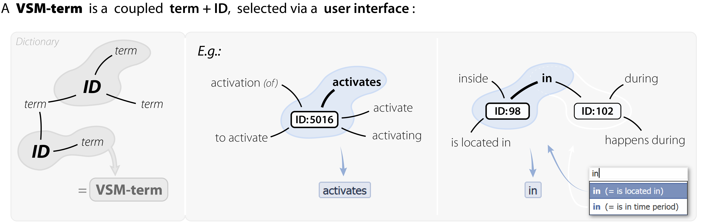
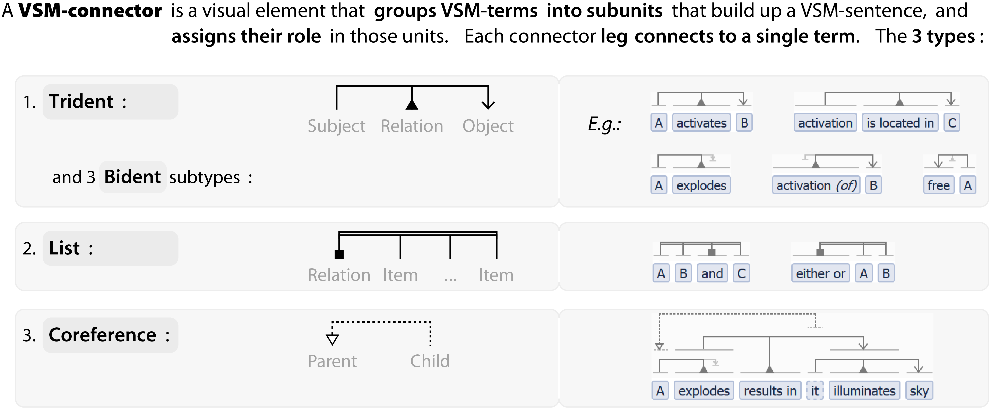
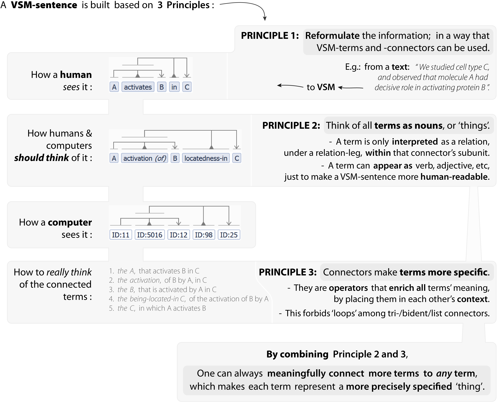

3. VSM in a nutshell
VSM is a language, communicated through a computer user-interface,
for representing any ‘piece of information’
in a way that is easily understood by both humans & computers.



Reference: VSM-terms | VSM-connectors: Trident, Bidents, List, Coreference | Principle 1, Principle 2, Principle 3.
Notes:
- When multiple subject/object legs connect to a term: they add context in an interchangeable way.
- Non-interchangeable connections: can be created via an extra term and a coreference. →
- Bidents that omit the relation: should follow conditions stated in the main text. →
In addition we can add:
Many interactive examples are on the Examples page
Or just go see the bigger picture on the Discussion page
or go back to How VSM Works